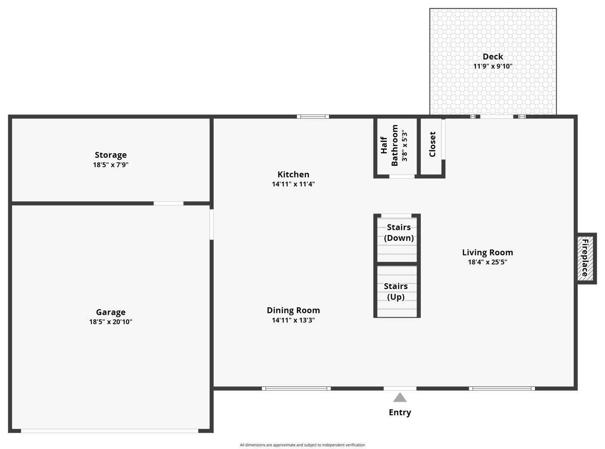
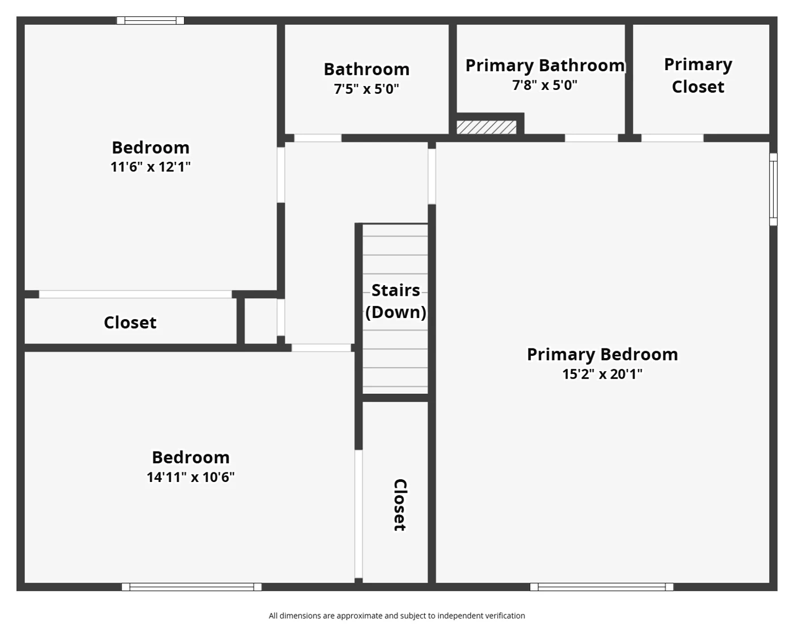
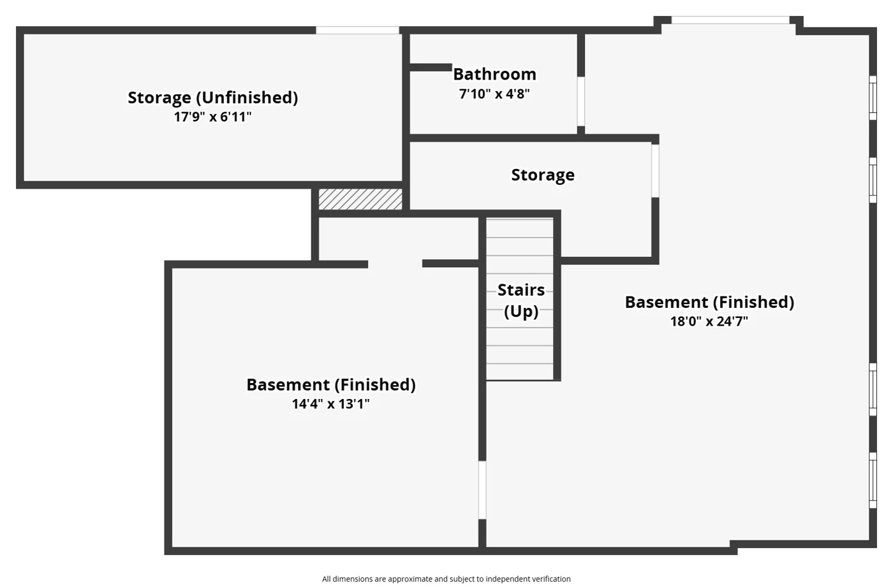

Welcome to 12237 Glenpark Dr in Maryland Heights. Located in the Pattonville School District, this 3-bedroom, 3.5-bath home offers over 2,400 finished square feet with several updates already taken care of for the next owner.
You’ll notice the fresh paint and new carpet right away, and upstairs you’ll find hardwood floors that add character throughout the bedrooms. The sellers didn’t stop there — the home also features a brand-new roof for added peace of mind. Connected to the garage is an approximately 8×20 bonus room that is both heated and cooled — home office, gym, workshop, hobby room, or extra hangout space.
The finished walk-out lower level adds a full bathroom and flexible rec space with French doors to the backyard. Out back, a covered deck overlooks green space for entertaining, relaxing, or a favorite four-legged friend. Pattonville schools serving this address include Rose Acres Elementary, Holman Middle, and Pattonville Senior High.
At $374,900 across 2,410 finished square feet, this home runs about $156/sqft — competitive for an updated two-story with a finished walk-out basement in the Pattonville School District. Buyers can run their numbers with the buying power calculator, and read up on the Pattonville School District & Maryland Heights before writing an offer.



Floor plans are for informational purposes only. All dimensions are approximate and subject to independent verification.
MLS# 26058817 · Listed by George Kindler, The Closing Pros LLC · Pattonville R-III School District · Built 1990 · Parcel 12O-21-1294 · Taxes $4,087 (2025) · No HOA · Public Sewer & Water · Status: Active · Occupancy permit required (Maryland Heights).
Agent-owned disclosure: The seller is a licensed Missouri real estate agent (agent-owned). Listing agent George Kindler and The Closing Pros LLC have no ownership interest in this property and are not a party to the transaction.

The Closing Pros LLC · 13 Yrs · 250+ Transactions
Listing Agent